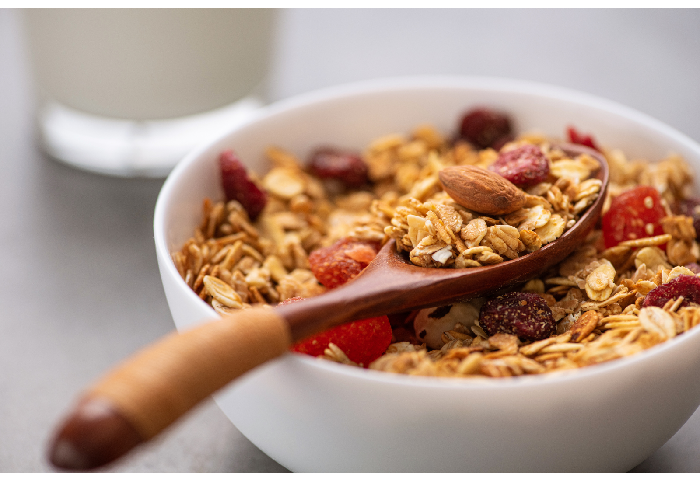

Breakfast Cereal
CrunchOats Model O45
A honey-almond breakfast cereal supplied in a 450-gram box and containing 8 grams of fibre per 100 grams.
- Contains 8 g of fibre per 100 g
- Honey-almond flavour
- Supplied in a 450 g box
Honey-Almond Cereal 
CrunchOats Breakfast CerealModel O45
Crunchy everyday breakfast
Honey-almond cereal made with oats
GoldenVale CrunchOats O45 is a honey-almond breakfast cereal supplied in a 450-gram box.
CrunchOats O45 contains oats and almonds and has a honey-almond flavour. It can be served as a breakfast cereal with a preferred accompaniment.
The cereal contains 8 grams of fibre per 100 grams. This value is stated for each 100 grams of the cereal rather than for the entire 450-gram box.
Product highlights
Honey-almond flavour in a crunchy oat cereal
CrunchOats O45 combines oats, almonds, honey-almond flavour and clearly stated fibre information in a 450-gram cereal box.
8 grams of fibre per 100 grams
CrunchOats O45 contains 8 grams of fibre for every 100 grams of cereal.
Honey-almond flavour
The cereal has a honey-almond flavour that accompanies its crunchy oat-based format.
450-gram box
Each box contains 450 grams of CrunchOats O45 breakfast cereal.
Contains oats
Oats are included among the declared ingredients in CrunchOats O45.
Contains almonds
Almonds are included among the declared ingredients and should be considered by people managing nut allergies.

Designed for breakfast
Straightforward serving and storage
Open the box and inner packaging, place the preferred amount of CrunchOats O45 in a clean bowl and add a suitable accompaniment if desired. Close the inner packaging after serving.
- Ready to serve
Place the preferred amount of cereal in a clean bowl before adding any chosen accompaniment.
- Clear fibre information
The product contains 8 grams of fibre for every 100 grams of cereal.
- Resealable inner packaging
Close the inner packaging securely after serving to help protect the remaining cereal.
Fibre content
Contains 8 g of fibre per 100 g
CrunchOats O45 contains 8 grams of fibre for each 100 grams of cereal. The value is expressed per 100 grams and does not represent the fibre content of the entire 450-gram box.
Fibre content8 g per 100 gMeasured by product weight
Product details
Product Information
Key product information for GoldenVale CrunchOats O45 breakfast cereal.
| Product name | CrunchOats |
|---|---|
| Model | O45 |
| Brand | GoldenVale |
| Product category | Breakfast cereal |
| Fibre content | 8 g per 100 g |
| Net weight | 450 g |
| Flavour | Honey-almond |
| Contains oats | Yes |
| Contains almonds | Yes |
| Product format | Boxed breakfast cereal |
| Product code | GV-O45-2026 |
Serving the cereal
How to serve CrunchOats O45
Complete the following steps when opening, serving and storing the cereal.
- 1
Check the packaging
Confirm that the box and inner packaging are intact before opening the cereal.
- 2
Pour the cereal
Place the preferred amount of CrunchOats O45 into a clean, dry bowl.
- 3
Add an accompaniment
Add a suitable preferred accompaniment if desired, then serve the cereal promptly.
- 4
Close the packaging
Close the inner packaging securely and return it to the box after serving.
Important information
Allergen Information and Storage
Follow these precautions when serving and storing CrunchOats O45.
Contains oats and almonds
- CrunchOats O45 contains oats.
- CrunchOats O45 contains almonds.
- Check the complete label before serving the cereal.
- Do not serve it when its ingredients are unsuitable.
Handle the cereal carefully
- Use a clean, dry bowl and serving utensil.
- Do not use cereal from damaged packaging.
- Avoid introducing moisture into the inner package.
- Close the inner packaging securely after serving.
Keep the cereal protected
Keep CrunchOats O45 in its original packaging in a cool, dry location. Close the inner packaging after each use and protect the cereal from moisture, direct heat and physical damage.
Questions and Answers
Frequently Asked Questions
Find answers about CrunchOats O45, including fibre content, box weight, flavour and declared ingredients.
Q How much fibre does CrunchOats O45 contain?
A
CrunchOats O45 contains 8 grams of fibre per 100 grams of cereal.
Q Does 8 grams refer to the whole box?
A
No. The stated fibre content is 8 grams for each 100 grams of cereal, not 8 grams for the entire box.
Q How much cereal is included in a box?
A
Each CrunchOats O45 box contains 450 grams of breakfast cereal.
Q What flavour is CrunchOats O45?
A
CrunchOats O45 has a honey-almond flavour.
Q Does CrunchOats O45 contain almonds?
A
Yes. CrunchOats O45 contains almonds and also contains oats.
Q Who manufactures CrunchOats O45?
A
CrunchOats O45 is manufactured and distributed by GoldenVale.